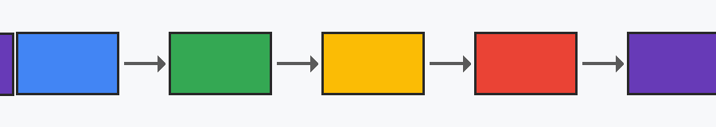

Architecture
From socket to response in five steps.

- Listener
- Parser
- Dispatcher
- Handler
- Response writer
- The listener accepts a TCP (or TLS) connection and starts a goroutine for it.
- The parser reads the request line, headers and body, rejecting malformed or oversized requests.
- The dispatcher walks the configured routes in order and picks the first handler that matches.
- The handler serves a file, proxies to a backend or renders the status page.
- The response writer sends the bytes, then either waits for the next request or closes.
Routes
This table was loaded by js/app.js from data/routes.json after the page rendered.
| Match | Action | Target | Note |
|---|
Latency
Fetches a small file ten times, skipping the browser cache, over the same keep-alive connection when possible.